ตรวจวัดสภาพแวดล้อมการเพาะปลูก 12 พารามิเตอร์แบบเรียลไทม์ สำรองข้อมูลอัตโนมัติเมื่ออินเทอร์เน็ตล่ม (Offline-First) พร้อมระบบควบคุมอุปกรณ์อัตโนมัติ แผนที่ดาวเทียม GIS และแจ้งเตือนผ่าน LINE Official Account
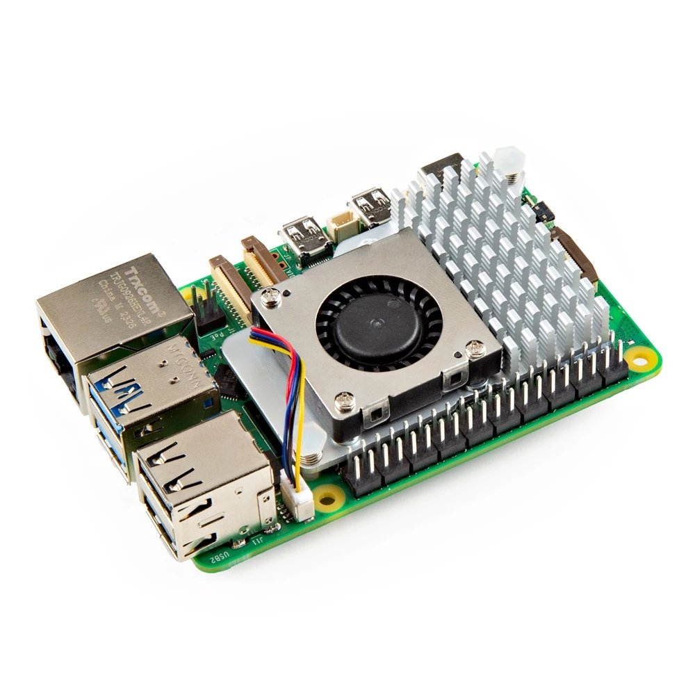
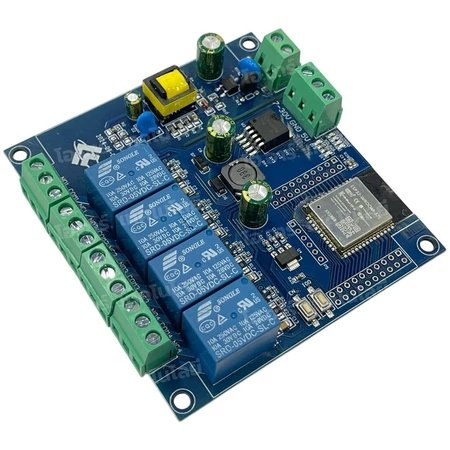
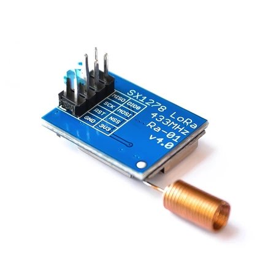
รับ-ส่งข้อมูล 12 เซนเซอร์ผ่าน LoRa & MQTT พร้อมระบบอัปเดตเฟิร์มแวร์ OTA
จัดการผ่าน SSH รันบริการอัตโนมัติ (Systemd) และบีบอัดข้อมูลเก่าลง USB
แดชบอร์ดเรียลไทม์ แผนที่ดาวเทียม 4 พิกัด ควบคุมอุปกรณ์ และแจ้งเตือน LINE
อ่านค่าเซนเซอร์ 12 ชนิด แปลงเป็น JSON ส่งผ่านคลื่น LoRa 433MHz และ MQTT
รับคลื่น LoRa คำนวณค่าความแรง RSSI / SNR แล้วส่งออกทางสาย USB Serial
รัน Mosquitto Broker + สคริปต์ Python พักข้อมูลลง MongoDB และซิงค์ทุก 10s
บันทึกข้อมูลลง 5 ตาราง ประมวลผลกฎ Auto Control และยิง Webhook แจ้งเตือน
เว็บแดชบอร์ด แผนที่ดาวเทียม GIS ควบคุมอุปกรณ์ และแจ้งเตือนผ่าน LINE OA
• คลื่นวิทยุ LoRa 433MHz & SPI: เชื่อมต่อระหว่างบอร์ด ESP32 กับชิป SX1278 ส่งข้อมูลทุก 5 วินาที
• MQTT (Port 1883) & USB Serial: เชื่อมต่อโหนดอุปกรณ์และส่งข้อมูลเข้าสู่เครื่อง Raspberry Pi 5
• HTTP REST API & SSH (Port 22): ซิงค์ข้อมูลผ่าน mDNS (.local) และรีโมตจัดการเกตเวย์ผ่าน SSH
| ส่วนของระบบ | สภาพแวดล้อมหลัก | ไลบรารีและเครื่องมือที่ใช้จริง (Libraries & Tools) | หน้าที่หลักในโปรเจกต์ |
|---|---|---|---|
| 1. ESP32 Firmware (LoRa & MQTT Nodes) |
C / C++ Arduino IDE 2.x |
<SPI.h> <LoRa.h> <ArduinoJson.h><WiFi.h> <WiFiManager.h> <PubSubClient.h><ESPmDNS.h> <HTTPClient.h> <HTTPUpdate.h> <time.h>
|
ส่งข้อมูลผ่าน LoRa 433MHz และ MQTT, เปิด AP ตั้งค่า Wi-Fi, ค้นหาชื่อ raspberrypi.local และอัปเดต OTA |
| 2. Edge Gateway (Raspberry Pi 5) |
Debian Linux · Python 3 Docker · Systemd |
Eclipse Mosquitto (MQTT Broker :1883) · OpenSSHpyserial · pymongo · requests · gzip · shutilDocker (mongo) · nmcli · Avahi mDNS
|
รีโมตจัดการผ่าน SSH, รัน MQTT Broker, อ่านค่า Serial พักลง MongoDB และบีบอัดข้อมูลเก่าลง USB |
| 3. Backend Server (REST API & DB) |
PHP 8.x Server SQLite 3 Database |
PDO (pdo_sqlite / pdo_mysql)cURL · OpenSSL · JSON
|
รับซิงค์ข้อมูล, ประมวลผลกฎ Auto Control 4 อุปกรณ์ และยิง HTTPS แจ้งเตือนเข้า LINE API |
| 4. Frontend & GIS (Web Dashboard) |
React 18 · TypeScript Vite 8 Proxy Server |
react · vite (Reverse Proxy /api)leaflet (Esri Satellite GIS) · lucide-react
|
แสดงผลแดชบอร์ดเรียลไทม์, แผนที่ดาวเทียม 4 พิกัด, แยก 3 โซนแปลงเกษตร และกราฟ SVG ย้อนหลัง |
| 5. DevOps & Cloud (Network & Bot) |
Git · Dynamic DNS Messaging API |
Git & GitHub (OLM22/smart-farm) · DuckDNSLINE Messaging API · ME-QR · SSH Tunnel |
เก็บโค้ดบน GitHub, อัปเดตโดเมน olmy.duckdns.org, สร้าง QR Code และส่งแจ้งเตือนเข้า LINE OA |
GPIO 26, 27, 14, 12)/dev/ttyUSB0) และ Wi-Fi Dual-Bandใช้พอร์ต VSPI มาตรฐานของ ESP32 เชื่อมต่อกับโมดูล LoRa SX1278 (433MHz)
| ขาโมดูล LoRa SX1278 | ขาบอร์ด ESP32 | หน้าที่การทำงาน |
|---|---|---|
| VCC / GND | 3V3 / GND | ไฟเลี้ยงวงจร 3.3V และกราวด์ร่วม |
| SCK | GPIO 18 | สัญญาณนาฬิกา SPI Clock |
| MISO | GPIO 19 | รับข้อมูลจากโมดูล LoRa เข้า ESP32 |
| MOSI | GPIO 23 | ส่งข้อมูลจาก ESP32 เข้าโมดูล LoRa |
| NSS (CS) | GPIO 5 | ขาเลือกชิป (Chip Select) |
| RST | GPIO 14 | ขารีเซ็ตฮาร์ดแวร์ชิปวิทยุ |
| DIO0 | GPIO 26 | ขาแจ้งเตือนเมื่อรับ-ส่งแพ็กเกจเสร็จ |
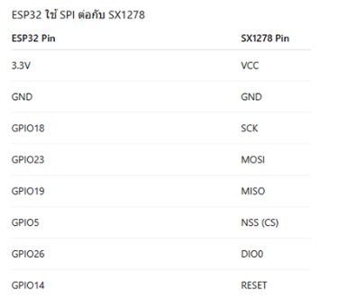
<SPI.h>, <LoRa.h>, <ArduinoJson.h>433E6, SF7, SyncWord 0xF3<PubSubClient.h> เชื่อมต่อ Mosquitto Broker (พอร์ต 1883)<ESPmDNS.h> ค้นหา IP ของ raspberrypi.local อัตโนมัติ<HTTPUpdate.h> อัปเดตเฟิร์มแวร์ไร้สาย (OTA) และสั่งงานรีเลย์ 4 ช่องWiFiManager.h: ปล่อย Wi-Fi AP ชื่อ SmartFarm_Rx_xxxxxx ให้มือถือเกาะตั้งค่าที่ 192.168.4.1RSSI และ SNR แนบเข้า JSON ส่งต่อทาง USB Serial#define LED_ON LOW รองรับบอร์ด Active-Low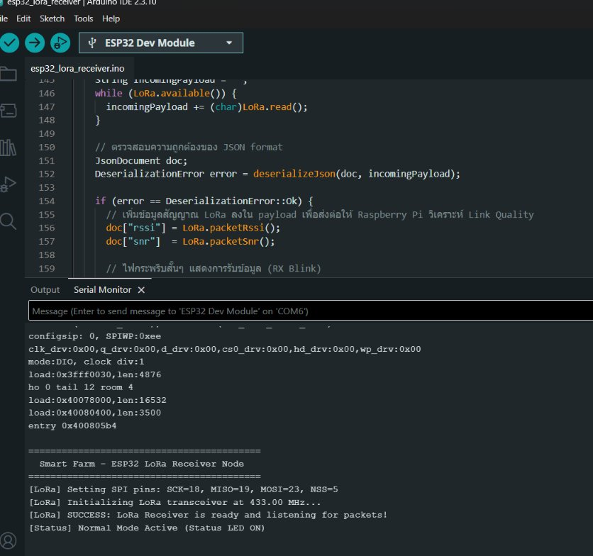
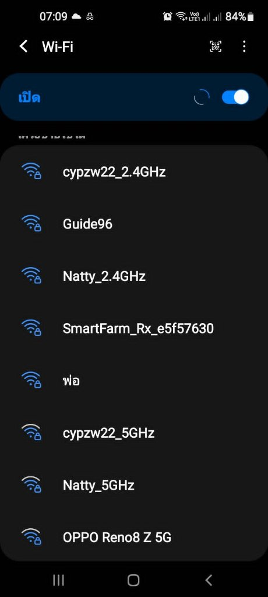
| หมวดหมู่ | คีย์ JSON | พารามิเตอร์ที่ตรวจวัด | หน่วย |
|---|---|---|---|
| 1. อากาศ | s_temp_s | อุณหภูมิอากาศ (Air Temp) | °C |
s_rh_s | ความชื้นสัมพัทธ์อากาศ (Air RH) | %RH | |
| 2. ดิน | soil_t | อุณหภูมิดิน (Soil Temp) | °C |
soil_rh | ความชื้นในดิน (Soil Moisture) | % | |
s_ph | ค่ากรด-ด่างในดิน (Soil pH) | pH | |
| 3. น้ำและปุ๋ย | w_temp | อุณหภูมิน้ำ (Water Temp) | °C |
w_ph | ค่ากรด-ด่างของน้ำ (Water pH) | pH | |
w_ec / f_ec | ค่าการนำไฟฟ้าน้ำ / ปุ๋ย (EC) | mS/cm | |
flow | อัตราการไหลของน้ำ (Flow Rate) | L/min | |
| 4. แสง | lux | ความเข้มแสงสว่าง (Light Lux) | Lux |
par | แสงสังเคราะห์แสงของพืช (PAR) | µmol/m²/s |
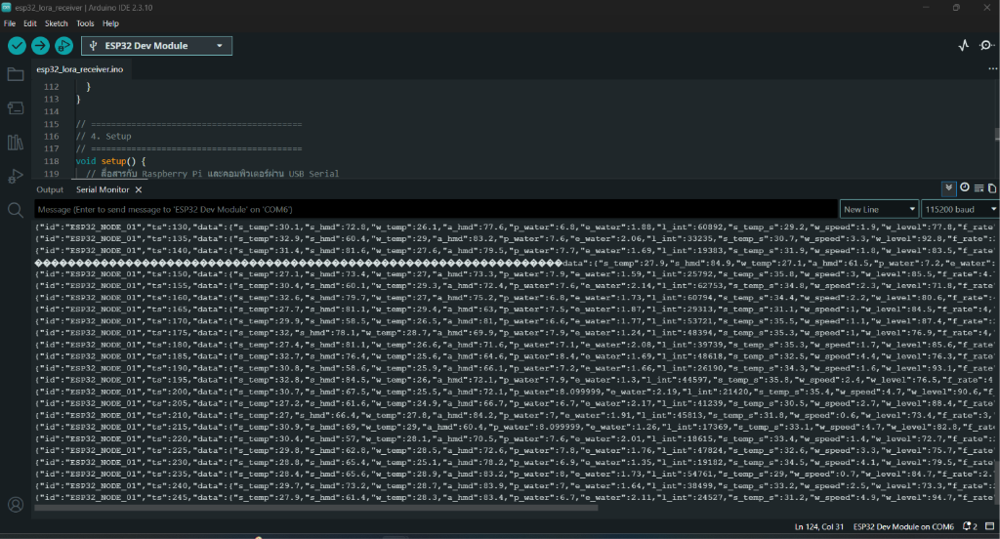
ssh olmypi@raspberrypi.local1883 ภายในวงแลน--restart always) สำหรับพักข้อมูลเซนเซอร์smartfarm-gateway.service รันอัตโนมัติทันทีที่เสียบปลั๊กไฟ
main.py (ตัวควบคุมหลัก) · serial_reader.py (อ่าน USB Serial ด้วย pyserial) · mongo_handler.py (บันทึก MongoDB ด้วย pymongo) · sync_client.py (ส่ง HTTP POST ด้วย requests) · storage_manager.py (บีบอัดไฟล์ gzip)
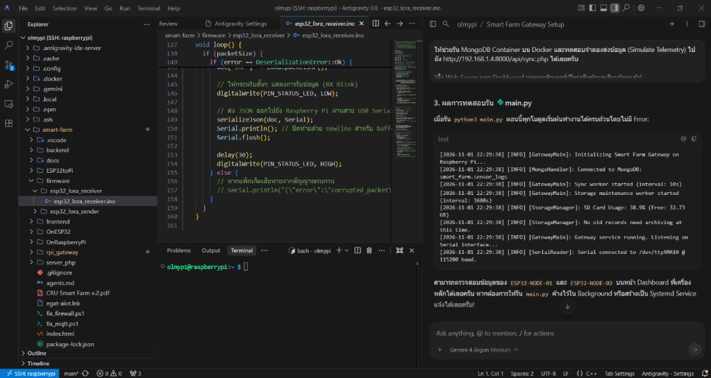
synced: false200 OK จึงเปลี่ยนเป็น synced: trueshutil เช็คพื้นที่ SD Card ทุก 1 ชั่วโมงgzip เป็นไฟล์ .json.gz ย้ายลงแฟลชไดรฟ์ /media/usbคอลเลกชัน smart_farm.sensor_logs เก็บ JSON Document ความเร็วสูง:
| ชื่อตาราง (Table) | หน้าที่หลัก |
|---|---|
farm_sensor_logs |
เก็บข้อมูลเซนเซอร์ 12 ค่า + mongo_id (UNIQUE) ป้องกันข้อมูลซ้ำ |
farm_alert_rules |
เก็บเงื่อนไขแจ้งเตือนที่ผู้ใช้ตั้งค่า เช่น w_ph > 7.8 (DANGER) |
farm_alert_logs |
เก็บประวัติการแจ้งเตือนทั้งหมดและใช้คำนวณเวลา Cooldown |
farm_device_controls |
เก็บสถานะอุปกรณ์ทั้ง 4 ตัว โหมด Auto/Manual และค่าเกณฑ์เปิด-ปิด |
farm_line_settings |
เก็บ Channel Access Token ของ LINE OA และสถานะการเปิดใช้งาน |
normalizeRecord() แปลงชนิดข้อมูลตัวเลขจาก SQLite ให้แสดงผลทศนิยมได้อย่างแม่นยำไม่เกิดหน้าจอดำ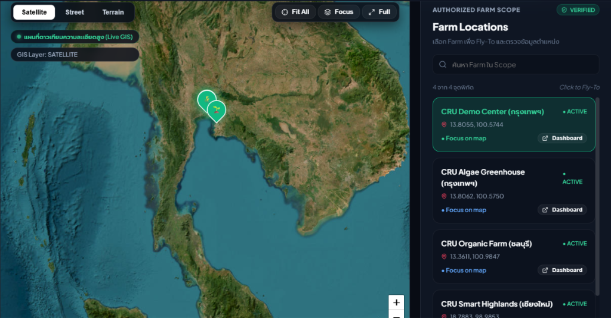
ประมวลผลทุกครั้งที่มีข้อมูลซิงค์เข้าเซิร์ฟเวอร์ และคลิกแก้ไขตัวเลขเกณฑ์บนหน้าการ์ดได้ทันที:
| อุปกรณ์ | ค่าเซนเซอร์ที่ตรวจ | เงื่อนไขเปิดอัตโนมัติ (Auto) |
|---|---|---|
1. พัดลมระบายอากาศ (fan_1) |
อุณหภูมิอากาศ (s_temp_s) |
เปิดเมื่อ > 32.0 °C |
2. ปั๊มน้ำหลัก (pump_1) |
ความชื้นในดิน (soil_rh) |
เปิดเมื่อ < 45.0 % |
3. ไฟสังเคราะห์แสง (light_1) |
ความเข้มแสง (lux) |
เปิดเมื่อ < 3,000 Lux |
4. วาล์วน้ำปุ๋ย (valve_1) |
ค่า EC น้ำ (w_ec) |
เปิดเมื่อ < 1.2 mS/cm |
🖐️ โหมด MANUAL: กดสลับเพื่อสั่งเปิด/ปิดด้วยตัวเอง พร้อมแสดงสถานะยืนยันกลับ (เช่น FAN_1_OFF)
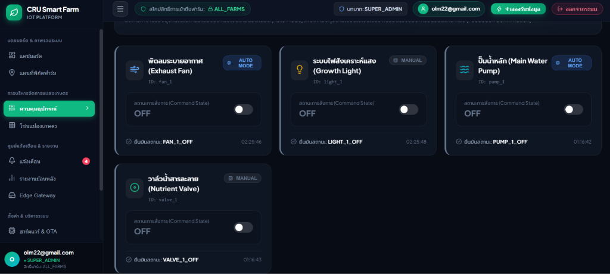
w_ph > 7.8) จะบันทึกลงตารางแจ้งเตือนทันทีhttp://olmy.duckdns.org:5173 ให้กดเปิดดูบนมือถือได้ทันที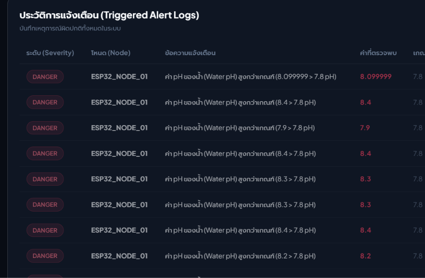
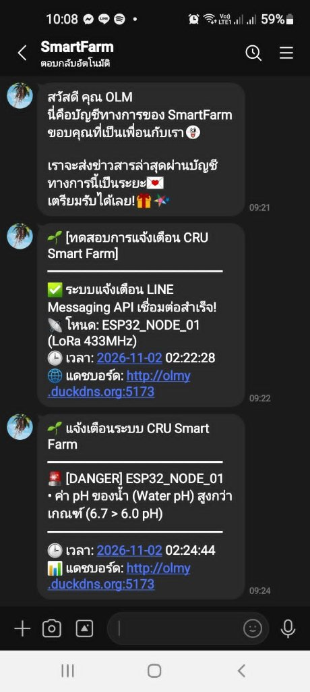
github.com/OLM22/smart-farmolmy.duckdns.org พร้อมสคริปต์อัปเดต IP อัตโนมัติ (update_duckdns.ps1)Start_Public_Tunnel.bat สำรอง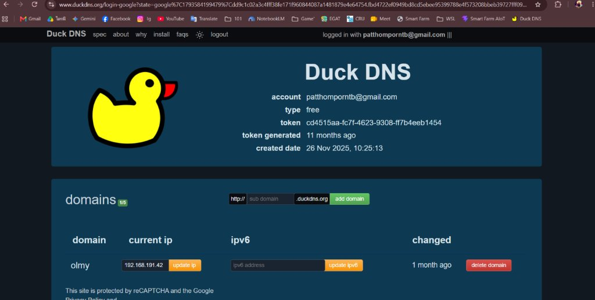
olmy.duckdns.org